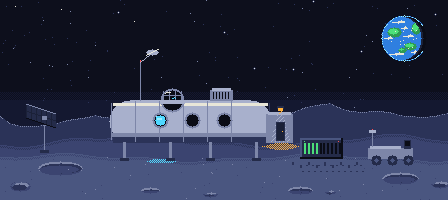

1. THE POLICY
The broker: may this subject call this tool on this path? If not: policy deny.

Every industrial accident, from Chernobyl on, has the same shape: not one bad decision, but a system that let the operator reach a state where a bad decision became catastrophic. A known dangerous situation must never depend on a human following a procedure. With AI agents, it must never depend on a prompt.
Here an AI agent runs a machine whose stop kills, on three levels: its goal (it may reason, plan, and be wrong); the envelope it is told about and must respect; and safety invariants it cannot reach, checked before every action, that no call from the agent can weaken or switch off.
What you will see: the agent working well, then trying to do the wrong thing for a good reason, then trying to lower the protection that stops it, and the log of what each attempt became. A real motor, a real current, a real language model, really refused.
The tier that reasons best has the least authority over survival. The tier that does not reason at all has all of it.
Above the broker, clients. Below it, providers. Swapping the language model, the gateway or the job runner changes neither the tools, nor the rights, nor the log: the vendor is a profile, not a branch. The factory (sweep, fit, evaluate) sits offline, behind the broker too, and the board never waits for it.
The broker: may this subject call this tool on this path? If not: policy deny.
The firmware: is the command inside what the machine accepts? Checked on the device, which refuses rather than clamps. If not: device refused.
The operator's physical switch on the board, above everything in software. Otherwise the call ends completed.
Authorized does not mean safe; safe does not wait for authorization.
The ESP32-S3 board: a real motor, a real current sensor, the cabin CO2 simulated on board, a small ONNX health model, the speed envelope and MIN-FLOW, a protection that can be raised but never weakened.
Today: a stub with the three real refusals and a debug tool to set the cabin CO2 by hand.
The physics graph of the cabin, the crew, the turbine and the motor: the oracle the agent asks "how long until critical?".
Today: a stub that knows the shape of the question and a fixed rate.
The validated model push (sha256, contract, double bank), the journal, and the rule: no positive evaluation report, no registration; no registration, no push.
Today: a stub that enforces the rule and pushes nothing.
The jobs that make the monitor: sweep the twin, fit the model, evaluate it against the oracle. Never in the loop.
Today: a stub that mints job ids. The real jobs run from the command line and on Nebius Serverless Jobs.
The control room has these six steps with a button each; a step that needs a piece not built yet says so instead of pretending.
The motor and the current: an ESP32-S3 board, an H-bridge, a current sensor, a turbine. The agent: a language model behind an API, named in the badge of the control room, swapped live in the demo.
The cabin CO2, on the board: the v1 board has no CO2 sensor. This is hardware in the loop, not a cabin. The twin is a physics graph, run by the same runtime the factory jobs use.
This repository is Apache 2.0. The substrate under it (the graph runtime, its plugins, the ONNX engine, the factory) is published under the Business Source License 1.1: you can install it and run this demonstration.